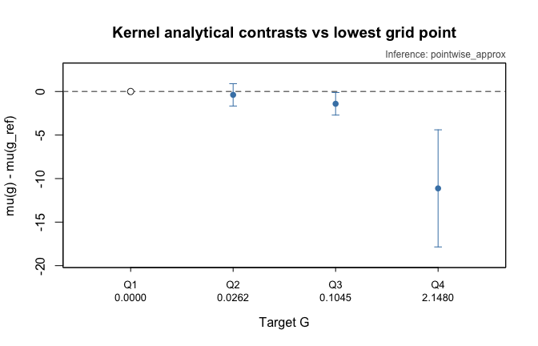

library(fdid)
data(fdid)
mortality$uniqueid <- paste(
as.character(mortality$provid),
as.character(mortality$countyid),
sep = "-"
)
covar <- c("avggrain", "nograin", "urban", "dis_bj", "dis_pc",
"rice", "minority", "edu", "lnpop")
tr_period <- 1958:1961
ref_period <- 1957
s_cont <- fdid_prepare(
data = transform(mortality, G_cont = lnpczupu),
Y_label = "mortality",
X_labels = covar,
G_label = "G_cont",
unit_label = "uniqueid",
time_label = "year"
)4 Kernel Estimator for Continuous G
This chapter gives a focused workflow for method = "kernel" with continuous baseline factor G. The structure follows the practical style used in the interflex tutorial and in Liu, Liu, and Xu (2025): diagnose support first, estimate the curve, inspect uncertainty, then report specific contrasts or derivatives.
The kernel estimator is useful when the main empirical object is a smooth continuous-\(G\) curve rather than a single slope. It estimates two event-period objects:
- the level curve, \(\mu(g)\), the local FDID response at a value of
G; - the derivative curve, \(\delta(g)\), the local slope of that response.
Unlike the DML estimators in Chapter Chapter 5, the kernel estimator is a fused local smoother: the local linear fit, support weighting, and curve aggregation are part of one estimator.
4.1 Data Setup And Support
The famine mortality example has a mass point at zero in lnpczupu. This is important because eval_g is an estimation grid, not a plotting-only option. When eval_g = NULL, fdid() constructs the grid internally:
The package default is trim = 0.05, so eval_g = NULL usually means 50 points from the 5th to the 95th percentile of the observed G values after the estimation sample is formed. trim does not delete observations or winsorize G; it only chooses the endpoints of the evaluation grid. If more than 5 percent of units have G = 0, then the lower endpoint is still zero.
In this chapter we deliberately set trim = 0 while leaving eval_g = NULL. That keeps the convenient 50-point automatic grid but expands it to the full observed support of G. This is useful in the mortality example because the 95%-100% upper tail contains substantively large observed baseline-factor values rather than a single isolated outlier. Supplying eval_g manually would override this rule and estimate exactly the points supplied.
| quantity | value |
|---|---|
| n units | 921.0000 |
| share G = 0 | 0.4473 |
| package default trim | 0.0500 |
| chapter trim | 0.0000 |
| package default grid maximum | 0.6938 |
| chapter grid minimum | 0.0000 |
| chapter grid maximum | 2.1482 |
| chapter grid size | 50.0000 |
| units above package 95% endpoint | 46.0000 |
| share above package 95% endpoint | 0.0499 |
| 20% positive support | 0.0372 |
| 80% positive support | 0.3063 |
The support plot below does not draw all 50 evaluation points. The table records the grid size, while the figure marks only the full-support upper endpoint, the package-default 95% endpoint, and a few positive-support landmarks.
old_par_support <- par(no.readonly = TRUE)
layout(matrix(c(1L, 2L), ncol = 1), heights = c(4, 1.05))
par(mar = c(4.7, 4.2, 4, 2) + 0.1)
hist(s_cont$G, breaks = 35, col = "gray85", border = "white",
xlim = c(0, max(kernel_chapter_grid) * 1.02),
xlab = "Baseline factor G: lnpczupu",
main = "Observed support for continuous G")
abline(v = max(kernel_package_grid), col = "gray40", lty = 2, lwd = 1.5)
abline(v = kernel_landmarks, col = "firebrick", lty = 3, lwd = 1.5)
points(max(kernel_chapter_grid), 0, pch = 17, col = "steelblue", cex = 1.4)
rug(s_cont$G, col = grDevices::adjustcolor("black", 0.25))
par(mar = c(0, 4.2, 0.2, 2) + 0.1)
plot.new()
legend("center",
legend = c("full-support upper endpoint", "package trim = 0.05 upper end",
"positive-support landmarks"),
col = c("steelblue", "gray40", "firebrick"), lty = c(NA, 2, 3),
pch = c(17, NA, NA), lwd = 1.5,
bty = "o", bg = "white", box.col = "gray75")
4.2 Basic Kernel Fit
The next fit uses a fixed bandwidth h0 so that the tutorial renders quickly and reproducibly. Leaving h0 = NULL asks the package to select the baseline bandwidth by cross-validation. We leave eval_g = NULL but set trim = 0, so the fitted object stores a 50-point grid over the full observed support of G.
fit_kernel_fast <- fit_fdid(
s_cont,
tr_period = tr_period,
ref_period = ref_period,
method = "kernel",
h0 = 0.18,
K_folds = 3,
trim = kernel_chapter_trim,
vartype = "robust"
)The first reporting layer is the standard summary() method. It gives the scalar aggregate/event/dynamic rows and then identifies the stored continuous-\(G\) curve object.
if (!is_fit_error(fit_kernel_fast)) {
summary(fit_kernel_fast)
}
#>
#> Factorial Difference-in-Differences (FDID) Summary
#> ========================================================================
#> Method: kernel
#> Variance Type: robust
#> Reference Period: 1957
#> Pre-Event Period: 1954, 1955, 1956, 1957
#> Event Period: 1958, 1959, 1960, 1961
#> Post-Event Period: 1962, 1963, 1964, 1965, 1966
#> ========================================================================
#>
#> Aggregate Estimates
#> ------------------------------------------------------------------------
#> Estimate Std.Error 95% CI
#> ------------------------------------------------------------------------
#> Pre-Event -0.4729 0.5878 [-1.6250, 0.6791]
#> Event -5.1790 1.5975 [-8.3101, -2.0480]
#> Post-Event -1.3640 0.4395 [-2.2255, -0.5026]
#> ------------------------------------------------------------------------
#>
#> Dynamic Estimates
#> ------------------------------------------------------------------------
#> Estimate Std.Error 95% CI
#> ------------------------------------------------------------------------
#> 1954 0.1453 0.7287 [-1.2831, 1.5736]
#> 1955 -0.6617 0.7291 [-2.0907, 0.7672]
#> 1956 -0.9023 0.6613 [-2.1985, 0.3939]
#> 1957 0.0000 0.0000 [0.0000, 0.0000]
#> ....................................................................
#> 1958 -3.1860 0.8728 [-4.8967, -1.4753]
#> 1959 -5.5275 2.2435 [-9.9247, -1.1303]
#> 1960 -11.1019 2.9329 [-16.8503, -5.3534]
#> 1961 -0.9008 1.9348 [-4.6929, 2.8913]
#> ....................................................................
#> 1962 1.1817 0.7661 [-0.3197, 2.6831]
#> 1963 -2.2929 0.5959 [-3.4608, -1.1250]
#> 1964 -2.1235 0.5804 [-3.2611, -0.9859]
#> 1965 -1.7378 0.5276 [-2.7718, -0.7038]
#> 1966 -1.8477 0.6160 [-3.0550, -0.6404]
#> ------------------------------------------------------------------------
#>
#> Moderation Curve Summary (G-domain)
#> ------------------------------------------------------------------------
#> Method: kernel | Eval points: 50 | G range: [0.000, 2.148]
#> Target: level curve mu(g) and derivative curve delta(g)
#> Bandwidth h0: 0.1800
#> Simultaneous bands: normal_pointwise
#> (Full mu(g) and delta(g) curves in $curve_event; scalar $est$event is interval average)
#> ------------------------------------------------------------------------The scalar event row is a compact interval-average level-slope summary over the fitted eval_g range. For the kernel estimator, the main objects are still the stored level and derivative curve arrays. Under vartype = "robust", the current implementation also stores analytical cross-grid covariance matrices for those arrays; this is what lets the scalar summary and exact-grid contrasts use covariance-aware standard errors rather than independent-endpoint approximations.
| G | mu_hat | se_mu | delta_hat | se_delta |
|---|---|---|---|---|
| 0.000 | 9.873 | 0.488 | -14.831 | 7.117 |
| 0.044 | 9.230 | 0.403 | -14.142 | 6.218 |
| 0.088 | 8.657 | 0.435 | -13.076 | 4.825 |
| 0.132 | 8.151 | 0.470 | -12.228 | 3.743 |
| 0.175 | 7.724 | 0.504 | -11.374 | 3.084 |
| 0.219 | 7.417 | 0.547 | -10.246 | 2.712 |
| 0.263 | 7.208 | 0.597 | -9.137 | 2.479 |
| 0.307 | 7.029 | 0.650 | -8.270 | 2.320 |
4.3 Level And Derivative Curves
plot(type = "curve") draws the stored curve values. Use curve = "level" for the FDID response curve and curve = "derivative" for the local slope.
if (!is_fit_error(fit_kernel_fast)) {
old_par <- par(mfrow = c(1, 2))
plot(fit_kernel_fast, type = "curve", curve = "level",
interval = "pointwise", Xdistr = "histogram",
support.panel = "embedded",
main = "Kernel level curve (mortality)")
plot(fit_kernel_fast, type = "curve", curve = "derivative",
interval = "pointwise", Xdistr = "histogram",
support.panel = "embedded",
main = "Kernel derivative curve (mortality)")
par(old_par)
}
Support displays are descriptive. They show where observed values of G lie inside the plotted window; they do not change the stored estimates. This estimator chapter uses one consistent histogram display, but its titles name the estimand rather than the display option. Chapter Chapter 6 shows the alternative density, rug, none, separate-panel, marker, and contrast plot options.
4.4 Bootstrap Pointwise And Uniform Bands
For kernel inference, keep two routes separate:
vartype |
What is stored | Main use |
|---|---|---|
"robust" |
analytical pointwise normal intervals plus stacked-sandwich mu_vcov and delta_vcov over the stored grid |
stable pointwise intervals, covariance-aware summaries, contrasts, and derivative values |
"bootstrap" |
bootstrap replicate curves, pointwise percentile intervals, bootstrap curve covariance, and finite-grid quantile-envelope bands | pointwise bootstrap intervals and uniform curve displays |
The robust covariance is a cross-grid covariance for the local-linear curve estimates. Exact-grid level contrasts use the identity V22 + V11 - 2 * V12; off-grid values use the same matrix after linear interpolation weights. Bootstrap covariance matrices are computed from the stored replicate curves.
The rendered example below keeps the same mortality dataset and the same full-support 50-point grid. It uses 200 bootstrap replications so the pointwise percentile intervals and finite-grid quantile-envelope band are much less dominated by a handful of extreme resamples than in a quick draft render. The band shown by interval = "both" is a bootstrap quantile-envelope band; it is not a studentized sup-\(t\) band. Even with 200 replications, the full-support right tail and derivative curve can remain wide because support is thinner and local slopes are more sensitive than levels.
The metadata row reports the number of bootstrap curves that are usable for the finite-grid uniform envelope. This count can be smaller than boot because the uniform envelope needs a whole bootstrap curve to be finite at every stored eval_g point. Pointwise percentile intervals are computed column by column with finite bootstrap draws, but a joint finite-grid envelope drops resampled curves that fail local-linear estimation at one or more grid points. This is not an additional trimming or winsorization step; it is a finite-value filter for the uniform-band calculation.
kernel_boot_draws <- 200L
fit_kernel_boot <- fit_fdid(
s_cont,
tr_period = tr_period,
ref_period = ref_period,
method = "kernel",
h0 = 0.18,
K_folds = 3,
trim = kernel_chapter_trim,
vartype = "bootstrap",
boot = kernel_boot_draws
)if (!is_fit_error(fit_kernel_boot)) {
old_par <- par(mfrow = c(1, 2))
plot(fit_kernel_boot, type = "curve", curve = "level",
interval = "both", show.uniform.CI = TRUE,
Xdistr = "histogram", support.panel = "embedded",
main = "Kernel level bands (mortality)")
plot(fit_kernel_boot, type = "curve", curve = "derivative",
interval = "both", show.uniform.CI = TRUE,
Xdistr = "histogram", support.panel = "embedded",
main = "Kernel derivative bands (mortality)")
par(old_par)
}
To hide the uniform band while keeping pointwise intervals, use show.uniform.CI = FALSE, mirroring the interflex plotting workflow.
if (!is_fit_error(fit_kernel_boot)) {
plot(fit_kernel_boot, type = "curve", curve = "level",
show.uniform.CI = FALSE,
Xdistr = "histogram", support.panel = "embedded",
main = "Kernel pointwise intervals (mortality)")
}
4.5 Reporting Contrasts And Derivatives
The curve is useful for diagnosis, but a write-up often needs a smaller number of quantities. fdid_contrast() reports level differences such as mu(g1) - mu(g0). fdid_derivative() reports a derivative at a fixed value of G.
For these compact reporting examples, we use the analytical vartype = "robust" fit from the basic kernel section rather than the bootstrap object used for the uniform-band display above. The reporting helper’s default inference = "auto" first looks for stored curve covariance; for exact-grid contrasts this is the V22 + V11 - 2 * V12 calculation. In this mortality example, however, the substantively useful reference is the lowest grid value G = 0, and the full-support boundary covariance can be numerically unavailable. We therefore request inference = "pointwise" in the compact table and coefficient plot, so the output is explicitly labeled as an analytical endpoint approximation.
| target | method | g0 | g1 | estimate | std.error | conf.low | conf.high | inference |
|---|---|---|---|---|---|---|---|---|
| level contrast | kernel | 0.000 | 2.148 | -11.125 | 3.432 | -17.851 | -4.399 | pointwise_approx |
| derivative value | kernel | 1.074 | NA | -4.797 | 1.631 | -7.994 | -1.599 | pointwise |
The fixed-reference coefficient plot gives the same reporting target in a visual form: choose a reference value of G, then display several mu(g) - mu(g_ref) contrasts and their 95% intervals. The reference row is the algebraic zero anchor.
if (!is_fit_error(fit_kernel_fast)) {
plot(fit_kernel_fast, type = "contrast",
ref.g = "min",
target.g = "5",
inference = "pointwise",
main = "Kernel analytical contrasts vs lowest grid point")
}
When the helper is applied to a bootstrap kernel object, exact-grid contrasts can use the stored bootstrap curve covariance matrix and the covariance identity V22 + V11 - 2 * V12. The robust object shown here now stores the analytical stacked-sandwich version of the same cross-grid covariance idea when the relevant grid covariance entries are finite. Use the bootstrap object when the target is a bootstrap curve display or replicate-based sensitivity check; use the robust object when the goal is a stable analytical reporting summary, and read the inference column to see whether the helper used covariance or a labeled pointwise approximation.
4.6 Option Checklist
| option | role |
|---|---|
| eval_g | Evaluation grid; NULL uses a 50-point grid controlled by trim. |
| h0 | Baseline bandwidth; NULL selects by cross-validation. |
| K_folds | Number of folds for bandwidth cross-validation. |
| vartype | Use robust pointwise intervals or bootstrap curve inference. |
| boot | Bootstrap replications for kernel replicate curves and bands. |
| cluster_label | Passed to fdid_prepare(); enables cluster bootstrap resampling. |
| curve | Choose level, derivative, or both curves. |
| interval | Choose pointwise intervals, uniform bands, both, or none. |
| show.uniform.CI | Suppress stored uniform bands at plotting time. |
| Xdistr | Show histogram, density, rug, or no support display. |
| support.panel | Draw support inside the curve panel or below it. |
| diff.values | Mark reporting values of G on the plot. |
For a substantive kernel analysis, the practical checklist is:
- inspect the support of
Gbefore choosing the grid; - avoid interpreting sparse tails or large mass points as smooth regions;
- report whether intervals are analytical pointwise, bootstrap pointwise, or covariance-based contrasts from stored curve covariance;
- call the simultaneous band a bootstrap quantile-envelope band, not a studentized sup-\(t\) band;
- report key values with
fdid_contrast()orfdid_derivative()in addition to the plot.